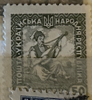
| SOURCE | TITLE| IMAGE MATCH | click to source page |
| www.ebay.com | Russia Civil War 1920 Ukraine Stamp:50Gr.Bandura player ... | 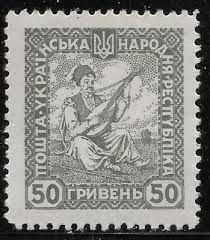 |
| www.ebay.com | UKRAINE MINT STAMP 1920 -- DENOMINATION 50h (fifty Hryvnia ... | 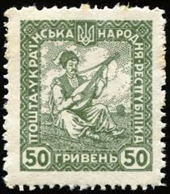 |
| www.alamy.com | Soviet union memorabilia hi-res stock photography and images ... | 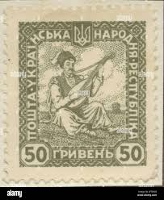 |
| commons.wikimedia.org | File:Stamps Viennese series Ivasjuk.jpg - Wikimedia Commons | 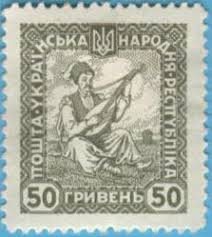 |
| colnect.com | Stamp: Stamp of UPR "50 hryven" (Ukraine(90th Anniv. of ... | 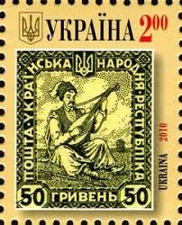 |
| www.hipstamp.com | DYNAMITE Stamps: Ukraine Scott #NPU 50 HR – MINT hr ... | 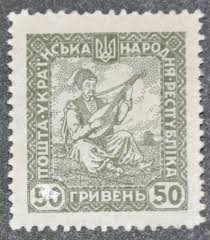 |
| www.carolselos.com.br | 37155 ..... UCRANIA - MUSICO COSACO - 50 g. - 1921 | 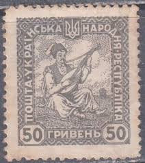 |
| commons.wikimedia.org | File:UNR postage stamp.JPG - Wikimedia Commons | 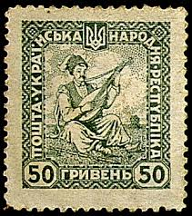 |
| www.ebay.com | Ukraine 2010 Block "Postage stamps of the Ukrainian People's ... | 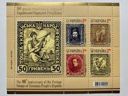 |
| www.stampcommunity.org | Need Help With These Ukraine Stamps - Stamp Community Forum | 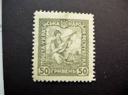 |
| unc.ua | Марка 50 гривень УНР 1920 купить на | Аукціон для ... | 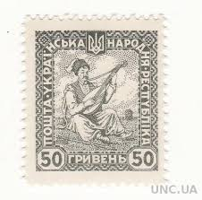 |
| prom.ua | Марка Україна 1920 УНР Венський випуск 50 гривен кобзар MNH ... | 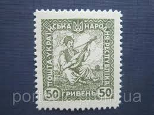 |
| www.hipstamp.com | Search "Ukraine 1920" / HipStamp | 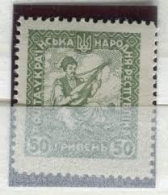 |
| shafa.ua | Марка -50 гривень(90 років поштовим маркам) — цена 198 грн в ... | 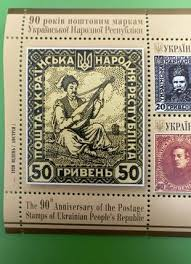 |
| www.linns.com | A recent history of Ukraine through its stamps | 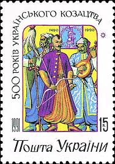 |
| violity.com | Stamp "50 UAH. Vienna issue. UNR. 1920" (113185688) - buy on ... | 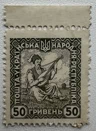 |
| aukro.cz | UKRAJINA - 1920 - Druhá definitivní emise | Aukro | 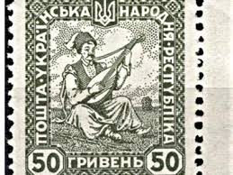 |
| www.lastdodo.com | Ukraine Stamp catalogue - LastDodo | 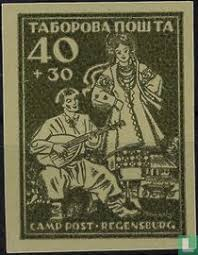 |
| colnect.com | Stamp: Girl and Flag (Ukraine(Not Issued Definitive 1920) Mi ... | 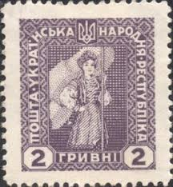 |
| mx.pinterest.com | Ukrainian postage stamp from 1920. | 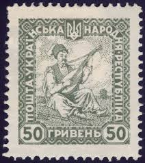 |
| newauction.org | Марка Украина 1920 УНР Венский выпуск 50 гривен бандурист ... | 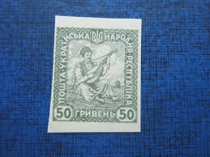 |
| www.researchgate.net | UKRAINIAN POSTAGE AT THE TIME OF THE LIBERATION STRUGGLES IN ... | 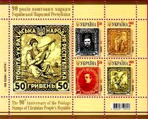 |
| www.osta.ee | 17-35 varia leiunurk vene ukraina (222009584) - Osta.ee | 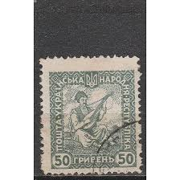 |
| www.ebay.com | Ukraine Postage Stamps 90th Anniversary Taras Shevchenko ... | 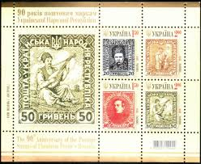 |
| unc.ua | Украина, УНР, Венский выпуск, 1920г, пробная марка 50грн ... | 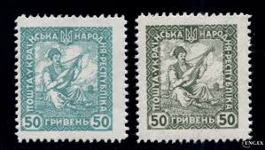 |
| www.etsy.com | Antique West Ukrainian Republic National Stamp, 20 HR, 1920 ... | 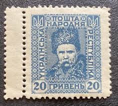 |
| brewminate.com | Ukraine between Revolution, Independence, and Foreign ... | 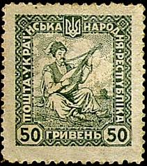 |
| www.digikala.com | قیمت و خرید تمبر یادگاری طرح کشور اکراین مدل 1920 میلادی | 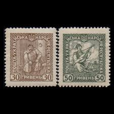 |
| pirkis.lt | Ukraina 2010 1034-41 Pašto ženklai 2.Blokai | 36415981 | 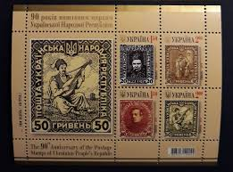 |
| www.buyhungarianstamps.com | 889 Ukraine - Ukrainian Soviet Socialist Republic Semi ... | 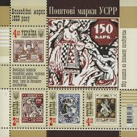 |
| violity.com | УНР. Венский выпуск 1920. Проба. 30 гривен. Пара марок ... | 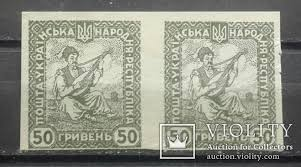 |
| stock.adobe.com | Trembita Images – Browse 111 Stock Photos, Vectors, and ... | 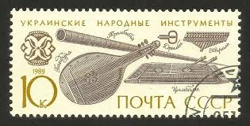 |
| peterstamps.com | Ukraine 2014 Europa CEPT National music instruments Cossack ... | 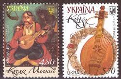 |
| www.hipstamp.com | Search "Ukraine 1920" / HipStamp | 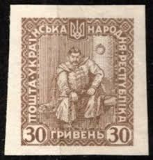 |
| poststampua.com | 75 years of the first Ukrainian postage stamps. Price, buy ... | 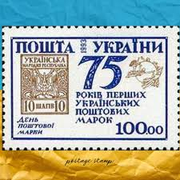 |
| www.buyhungarianstamps.com | B1-B4 Ukraine - Ukrainian Soviet Socialist Republic (MNH ... | 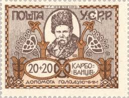 |
| www.mysticstamp.com | 9//40 - 1918 Ukraine, Russian Stamps with Ukraine Trident ... | 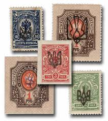 |
| rozetka.com.ua | Марка 90 лет почтовым маркам Украинской Народной Республики ... | 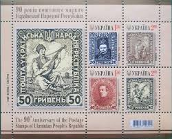 |
| ca.pinterest.com | 13 Козак Мамай ideas to save today | ukrainian art ... | 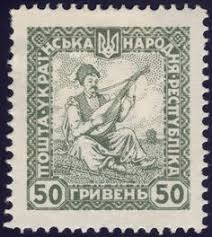 |
| en.wikipedia.org | Ukrainian shah - Wikipedia | 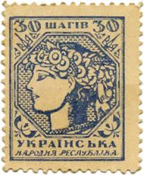 |
| www.hungarianstamps.com | Look Into The Future : A Philatelic Tribute to the People of ... | 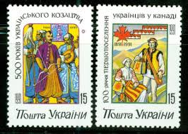 |
| postalmuseum.si.edu | Ukraine | National Postal Museum | 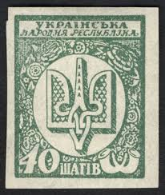 |
| www.reddit.com | Inherited stamp collection - looking for advice on how to ... | 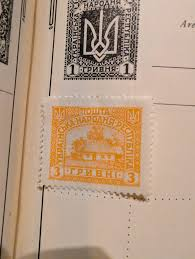 |
| www.ukrhec.org | Early 20th century Ukraine in postage stamps | Ukrainian ... | 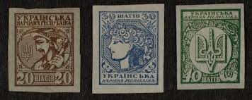 |
| stampaday.wordpress.com | White Russia #8 (1920) – A Stamp A Day | 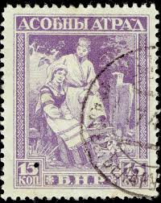 |
| en.numista.com | 20 Shahiv - Ukraine – Numista | 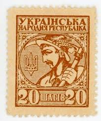 |
| www.kenmorestamp.com | Ukraine First Issue - 1918 Imperf Complete Mint Set of 5 | 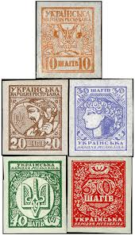 |
| www.balkanphila.com | 1918 Ukraine 10sh Currency Stamp – BalkanPhila | 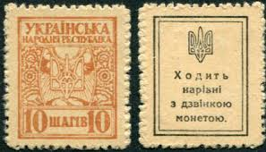 |
| thephilately.com | Ukraine Postage Stamps and Postal History for Sale | 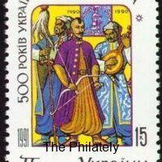 |
| picryl.com | 23 String instruments on stamps Images: PICRYL - Public ... | |
| www.facebook.com | What does the Hebrew stamp on birth certificate mean? | |
| mancryfmf.com | Cinderellas, part four: Illegal stamps! 2. Outlaws from the ... | |
| en.todocoleccion.net | s-05488- ukraine. ukrania. ykpaihcbka. - Buy Stamps from ... | |
| poststampua.com | Ukrainian currency - hryvnia 100 years postal block. Price ... | |
| unc.ua | Украина, УНР, Венский выпуск, 1920г, марки 50грн., кобзарь ... | |
| www.reddit.com | I found these Ukrainian stamps from 1920 in my great ... | |
| www.ebay.com | Ukraine block stamp 90 years UNR postage stamps 2010 Kobzar ... | |
| caucascapades.wordpress.com | Sayat Nova and The Color of Pomegranates | Caucascapades | |
| www.allnumis.com | Stamps Catalog - List of stamps for 1920-1929, Ukraine |
{kind=link}
{kind=link}